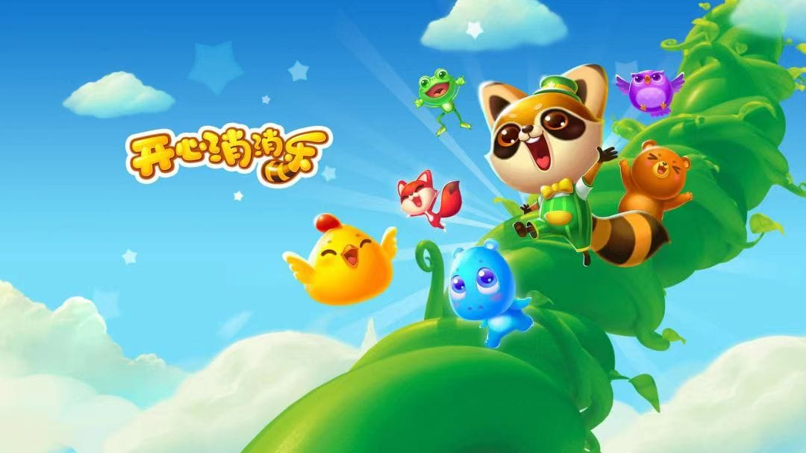

《开心消消乐》是一款乐元素研发的一款三消类休闲游戏，以救村长为目的，玩家开始了一段开心的闯关旅程。
创作背景
一天晚上，天空中掉下一颗神奇的豌豆种子，正好落在了梦之森林的村长屋附近，种子落地后吸收了池塘的水分，迅速成长，一夜之间变成参天大藤蔓…… 第二天早上，村民们醒来后看到巨大的藤蔓都惊呆了，聚在一起议论纷纷。有人说他似乎看到村长的房子在高耸入云的藤蔓上，房子似乎还在上升，有人号召说应该爬上去救村长，玩家需要爬到藤曼顶部救出村长。
单位设定
游戏中消除的对象为小动物的头像，包括小棕熊、小狐狸、小青蛙和小鸡等动物头像。玩家通关移动动物头像位置凑够3个或3个以上即可消除。（游戏中设置了体力上限30点，每次闯关需要消耗5点体力，当体力不足5点，玩家不能进入关卡。每个关卡通过后，玩家可以可以得到一定的星星数量，玩家获得彩星可以返还10点精力，3星可以返还5点精力，获得2星可以返还2点精力，获得1星不返还精力。
游戏种的障碍有很多，分别是传送门、冰块、金豆荚、雪块等。
整个游戏充满了神秘和浪漫色彩，画面和音乐也非常精美动人。